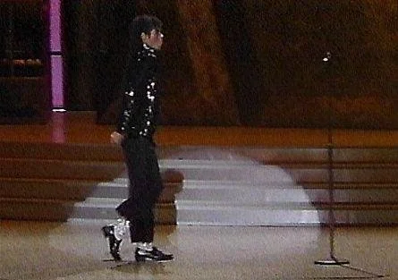
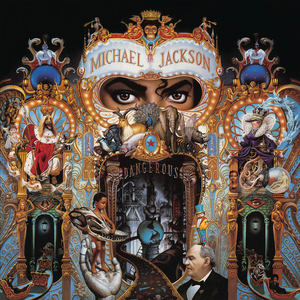
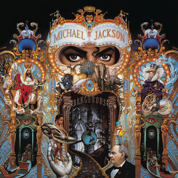

Gallery of Iconic Moments
Timeline Highlights
1958: Michael Jackson is born on August 29th in Gary, Indiana.
1982: Release of Thriller, the best-selling album of all time.
1983: Michael Jackson first performs the iconic moonwalk during *Motown 25*.
1984: Michael wins 8 Grammy Awards in a single night.
2009: Michael Jackson passes away on June 25th.
The Moonwalk
The moonwalk became one of Michael Jackson's most famous moves, first showcased during a performance of "Billie Jean" on the *Motown 25* TV special in 1983.
Live Performances
Michael Jackson's live performances were known for their energy and precision, blending iconic dance moves with powerful vocals.
Thriller Music Video
The "Thriller" music video, released in 1983, remains one of the most influential and iconic music videos in the history of pop culture.
Iconic Glove
The sparkling glove became one of Michael Jackson's trademarks. It was first seen in the 1983 *Motown 25* performance.
Grammy Awards
Michael Jackson won a record-breaking 8 Grammy Awards in 1984, solidifying his legacy in the music industry.
Family Life
Michael was also a loving father. His children, Prince, Paris, and Blanket, were often seen accompanying him during public appearances.
Iconic Albums
Michael Jackson's albums such as *Thriller*, *Bad*, and *Dangerous* revolutionized the music industry.

 
